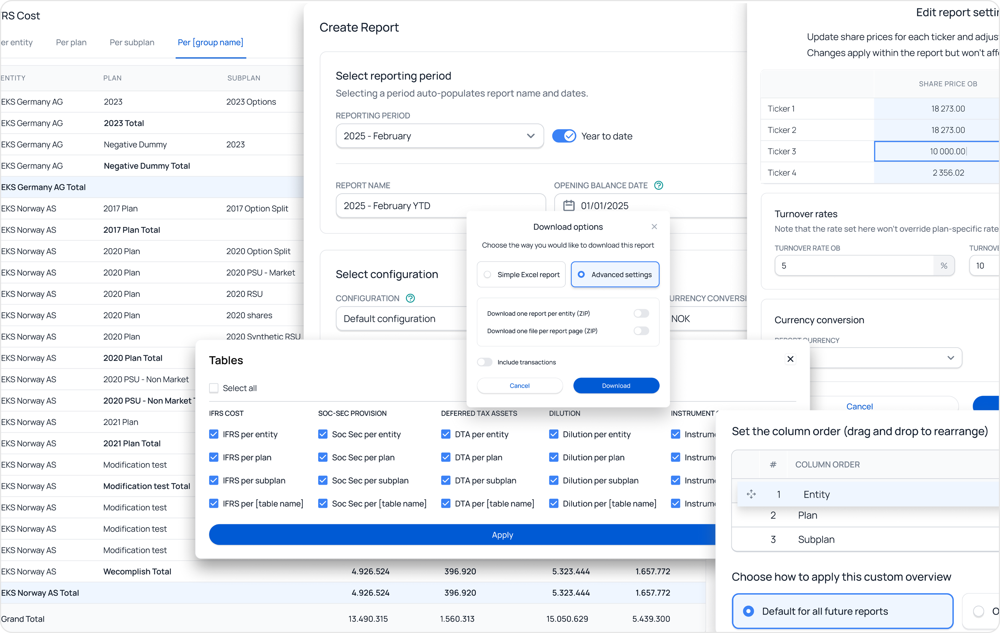
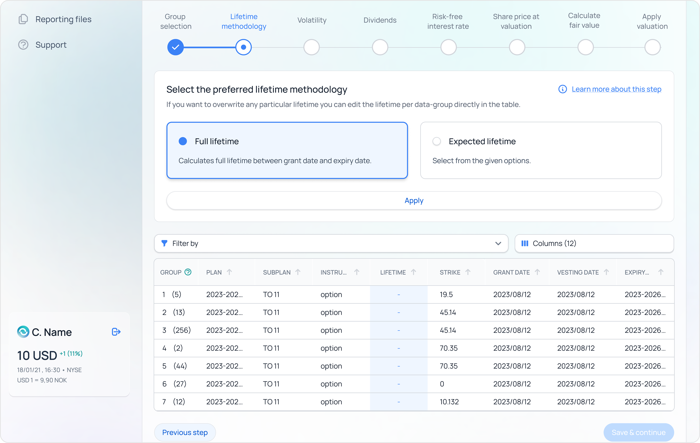
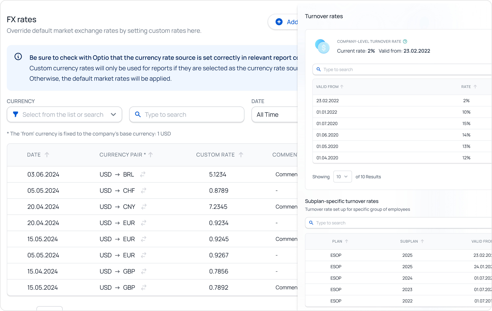
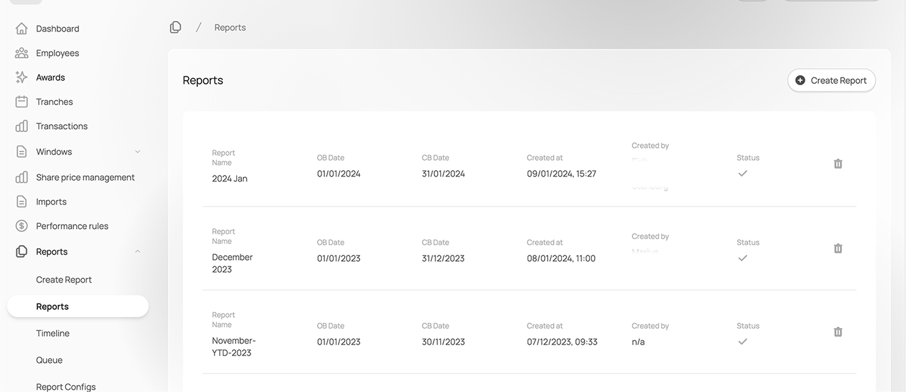
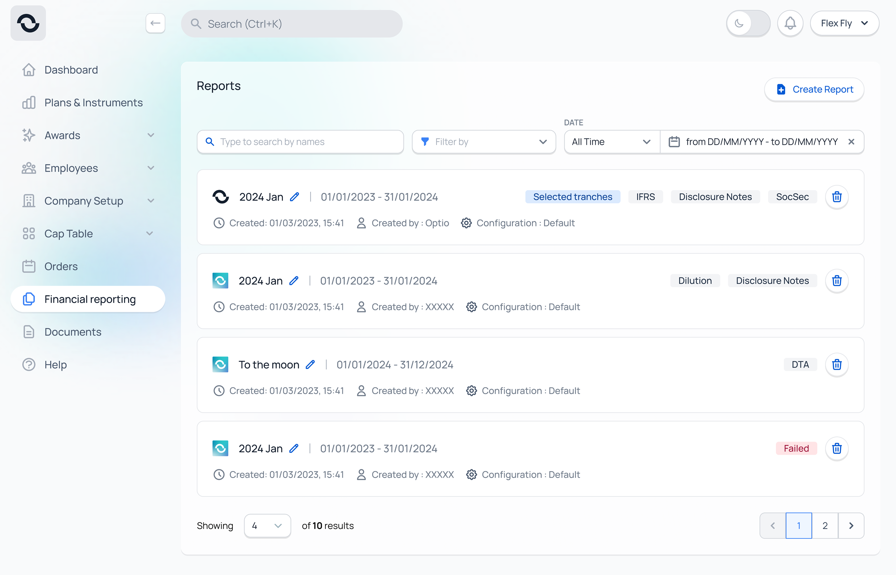
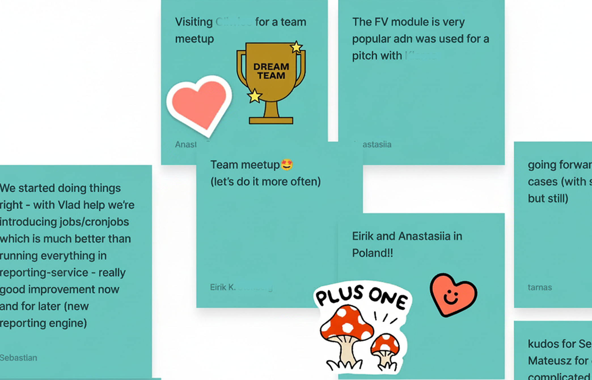
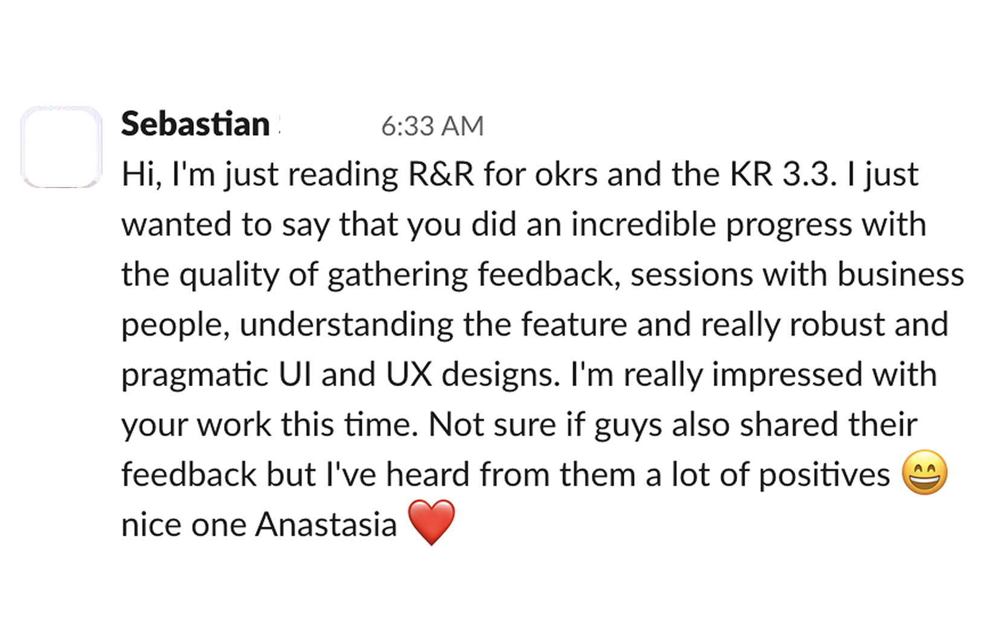

A self-serve reporting flow that finance teams can actually own — from a process that used to take days of manual prep, Slack threads and re-exported spreadsheets, to one that fits inside the product.
Project: Optio · Financial reportingRole: Lead Product DesignerTeam: 2 finance experts, 4 engineers, 1 PM, CSDuration: 2 years, shipped in releasesYear: 2024
2 yrs
From scoping to last release — shipped in incremental chunks across the roadmap.
4 → 1
Tools the workflow used to span (spreadsheets, email, Slack, product), reduced to one configurable surface.
days → hours
Finance leads' reporting prep, measured against the audit-ready output.
0
Engineering tickets needed to add a new country-specific FX or turnover rule.
01 · the problem
The problem hiding under the brief
The brief looked like a redesign. The reality was that reporting at Optio didn't really live in the product. It lived in shared spreadsheets, Slack threads and email exports between the finance team, Customer Success and the client's auditor.
That meant every report carried the same shape of risk: a number was wrong because a formatting rule drifted, a column got pasted into the wrong tab, a currency rule was out of date. Each fix triggered another review cycle. The closer a deadline got, the more brittle the whole thing felt.
The cost wasn't just time. Finance leads stopped trusting their own numbers until two other people had checked them. That's not a UI problem.
02 · framing
How I framed it before opening Figma
I split the reporting cycle into two halves and used that split as the project's design principle:
Mechanical work — data assembly, formatting, validation, FX, turnover — belongs to the product.
Judgemental work — interpretation, exceptions, narrative — stays with finance, but the product gives them better context to make those calls.
"If a screen is asking a finance team to do mechanical work the system could do, the design isn't finished."
— the design principle I used to defend every later decision
03 · design decisions
Four changes that shifted the workflow
design decision 01 · problem solving
A guided creation flow, not a settings panel
The original idea was a long form: pick everything up front, click generate. I argued for the opposite — an ordered conversation where each decision shows its consequence inline before you confirm it. Defaults are safe; the easy path is also the audit-safe one.

The flow steps the user through period, configuration and validation, with the consequence of each choice visible inline.
learning 01Users got nervous when they couldn't see what a setting would do until after they'd generated the report — explanation has to lead the input, not follow it.
learning 02Safe defaults don't have to be invisible — calling them out as recommended choices made admins more confident, not less curious.
design decision 02 · risk mitigation
Fair value calculations that explain themselves
Fair value was the most expensive thing to get wrong. The temptation was to expose every parameter as a form field. I pushed back: anything an admin shouldn't change without thinking should not look like a quick edit.
Instead, the flow walks the user through inputs in order, with the formula and the assumption visible at the same time. History and comparison views sit next to the current scenario, so an admin can see how this run differs from the last one — and so can the auditor.

Inputs, formula and assumption in the same view; history and comparison stay one tab away.
design decision 03 · systems thinking
Custom overviews that don't turn into a generic builder
Different clients wanted different breakdowns — by tier, by entity, by country. The old answer was custom development per client, which doesn't scale. The new question was: can one component handle every grouping a finance team can come up with, without becoming a generic spreadsheet?
I designed the overview as a composable surface — a few well-defined dimensions, drag-to-reorder structure, live preview. The constraint kept it from becoming an open-ended builder. The live preview kept it from feeling like configuration.
Admins compose overviews from a fixed set of dimensions; a live preview shows the resulting report in place.
design decision 04 · business judgment
FX and turnover rules an admin can edit safely
These rules used to live in code, so every country-specific edge case became an engineering ticket. Moving them into the product only made sense if the design stopped admins from quietly breaking the calculation.
The editor frames every change as a scoped, validated commit. Invalid currency pairs and overlapping turnover steps get caught at edit time, not at report time. The reasoning here came from Customer Success: their hardest tickets weren't about missing features, they were about admins changing the right thing in the wrong place.

ai in the loop
How AI fit into this project
Finance domain is dense — IFRS, fair value modelling, FX rules, country-specific reporting — and I'm not a finance expert. AI didn't replace that expertise; it shortened the distance to it.
Three places it earned its keep:
Synthesising research notes from finance partners — twenty hours of session transcripts turned into a tagged map of frictions overnight, which I then verified against the source clips. I trusted the structure; I never trusted the summary.
First-pass tooltip and validation copy — AI wrote drafts in IFRS-correct language; a finance expert and I edited every line. Saved a week of writing; cost an hour of editing per tooltip.
Stress-testing my own thinking — I'd paste a half-finished design rationale into the chat and ask for the strongest objections a CFO would raise. Two out of three rounds were noise; the third caught a real hole.
What I rejected: AI-generated UI explorations. In a domain where a misnamed field can mis-state a balance sheet, the cost of a wrong label is bigger than the time AI saved drawing it.
04 · trade-off
A trade-off I'd make differently today
The reports list was a fork in the road. The original surface used a third-party table component that sat outside the design system. It was powerful — sortable columns, dense rows, the medium a finance administrator actually thinks in.
I replaced it with cards. Cards were the pattern the rest of the product used, and consistency felt like the responsible call. I argued for it, the team agreed, we shipped it.

Original — third-party table

My redesign — design-system cards
In retrospect, I optimised for the wrong thing. The audience for this screen is admin super-users who live in tables. They don't want a friendly card; they want to sort five columns, scan twenty rows and act. Consistency mattered less to them than power.
The right call would have been to keep the table, absorb the design-system inconsistency, and write a focused exception in the system documentation explaining why. That's the move I'd make today. It's also the lens I now apply earlier in projects: which audience am I about to optimise against, and does the consistent pattern actually serve them?
05 · the shift
What shifted, in their own words
The clearest evidence wasn't a metric, it was the change in tone. Finance leads stopped opening tickets with "sorry to bother you" and started filing them as feature requests. That's a small word change that reflects a big shift in confidence.
06 · team
What it shifted for the team
Customer Success spent less time walking clients through how to format a report and more time on the questions only people can answer. Sales stopped using "we'll customise it" as a default answer in demos — they started showing the configuration in product instead.
Internally, the team kept a wall of notes from clients and colleagues across the project. That ritual mattered more than the wall itself — it made the design decisions feel earned, not invented.


A note from Sebastian, engineer on the reporting team — the kind of comment that tells you the shared language is working.
07 · what I'd carry forward
What I'd carry into the next finance product
A configurable flow beats a configurable form. Order and inline explanation do more for trust than any tooltip.
If a screen is asking a finance team to do mechanical work, the design isn't finished.
Customer Success is the best research panel a designer can have in B2B finance — they hear the problem in its first sentence.
Design-system consistency is a means, not an end. When the audience is super-users, the power they need can be worth the inconsistency it costs.